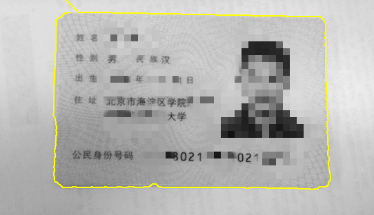

<!DOCTYPE html>


<html lang="en">


<head>
  <meta charset="utf-8" />
    
  <meta name="viewport" content="width=device-width, initial-scale=1, maximum-scale=1" />
  <title>
    Automatic ID Card Information Acquisition |  Shysie&#39;s doodling board
  </title>
  <meta name="generator" content="hexo-theme-ayer">
  
  <link rel="shortcut icon" href="/favicon.ico" />
  
  
<link rel="stylesheet" href="/dist/main.css">

  <link rel="stylesheet" href="https://cdn.jsdelivr.net/gh/Shen-Yu/cdn/css/remixicon.min.css">
  
<link rel="stylesheet" href="/css/custom.css">

  
  <script src="https://cdn.jsdelivr.net/npm/pace-js@1.0.2/pace.min.js"></script>
  
  

  

</head>

</html>

<body>
  <div id="app">
    
      
    <main class="content on">
      <section class="outer">
  <article
  id="post-id-nn"
  class="article article-type-post"
  itemscope
  itemprop="blogPost"
  data-scroll-reveal
>
  <div class="article-inner">
    
    <header class="article-header">
       
<h1 class="article-title sea-center" style="border-left:0" itemprop="name">
  Automatic ID Card Information Acquisition
</h1>
 

    </header>
     
    <div class="article-meta">
      <a href="/2017/11/27/id-nn/" class="article-date">
  <time datetime="2017-11-27T17:54:09.000Z" itemprop="datePublished">2017-11-27</time>
</a>   
<div class="word_count">
    <span class="post-time">
        <span class="post-meta-item-icon">
            <i class="ri-quill-pen-line"></i>
            <span class="post-meta-item-text"> Word count:</span>
            <span class="post-count">1k</span>
        </span>
    </span>

    <span class="post-time">
        &nbsp; | &nbsp;
        <span class="post-meta-item-icon">
            <i class="ri-book-open-line"></i>
            <span class="post-meta-item-text"> Reading time≈</span>
            <span class="post-count">6 min</span>
        </span>
    </span>
</div>
 
    </div>
      
    <div class="tocbot"></div>


  
    <div class="article-entry" itemprop="articleBody">
       
  <h2 id="Introduction"><a class="header-anchor" href="#Introduction">¶</a>Introduction</h2>
<p>The ID recognition system is a system that can recognize ID numbers in Chinese ID card. The source of ID card can be from videos or images. For video ID recognition, this system first track ID card in a video and then recognize ID in the clearest frame. For accurate result of tracking the moving speed of the ID card should not be too fast. Also the resolution of the video should be at least 1000*600 if the ID card occupies 1/3 of one frame. To realize functions above, we used 3 image processing methods, including intelligent scissors, SURF feature tracking and ID recognition.</p>
<a id="more"></a>
<h2 id="Background"><a class="header-anchor" href="#Background">¶</a>Background</h2>
<p>Effective and instant ID card identification is a critical issue for public especially on-campus security. Nowadays RF based technologies take up a major share in this application. But the electromagnetic interference limits the reliability of such tech. Digital image processing based Object Detection and tracking is considered as a reliable complement. Availability of high definition videos, fast processing computers and exponentially increased highly reliable automated video analysis algorithms have made it possible.</p>
<p>We have learned a lot about image computing methodology this semester in course: Biomedical image processing. And we want to use some of them. According to the idea of ID recognition, we want to implement the segmentation, tracking, recognition to transform ID numbers from pixels to integer in computer.</p>
<h2 id="Algorithms"><a class="header-anchor" href="#Algorithms">¶</a>Algorithms</h2>
<ul>
<li><em><strong>Intelligent Scissors for image segmentation</strong></em><br>
The Intelligent Scissors of our final project is from the paper (“Intelligent Scissors for Image Composition”, Eric N. Mortensen, William A. Barrett. Brigham Young University). We use this methodology to get a template where we can find features for the next tracking step. To implement this, first we should calculate all the local cost in a image by the following formulation (1):<br>
$$<br>
I(p,q) = \omega Z f Z(q) + \omega G f G(q) (\omega Z=0.8;\omega G=0.2)<br>
$$</li>
</ul>
<p>The $fZ(q)$ is the zero crossing result and the $fG(q)$ is the result of gradient magnitude. The second step is to calculate the shortest path between two points using the revised Dijkstra algorithm. And the last step is to show this path in the image by a bright color line.</p>
<ul>
<li><em><strong>Feature Tracking</strong></em><br>
To realize the feature tracking, we need to detect the features first. In the segment image which we get from the last step, our program try to find SURF features by the following method:</li>
</ul>
<ol>
<li><em>Smooth image with Approximate Gaussian filters</em><br>
First, use different Approximate Gaussian smoothing filters (the size of the Approximate Gaussian filter are 9<em>9, 15</em>15, 21<em>21, 27</em>27 respectively.<br>
<br>
And then calculate the determinant of the Hessian matrix and the following formulation (2) is the Hessian Matrix and the determinant:<br>
<br>
<br>
And $D_{xx}$ and $D_{xy}$ is the convolution of approximate Gaussian filter and the Image at each point in direction x-x and direction x-y respectively. The value 0.9 is a parameter which is got from experiments. We set a threshold and compare it with the determinant of the Hessian matrix to detect interested points. The method above can realize the scale invariance and the following orientation assignments can realize the orientation invariance.</li>
<li><em>Orientation assignment</em><br>
First, calculate the Haar-wavelet responses in x and y direction in a circular neighborhood of radius 6s around the interest point, with s the scale of this image. Then, calculate the sum of all wavelet responses within a sliding orientation window covering an angle of π /3 to determine the orientation.</li>
<li><em>Get the SURF descriptor</em><br>
<br>
Constructing a square region centred around the interest point and oriented along the orientation selected. Split up the region to 4<em>4 sub-regions and compute a new Haar-wavelet response at 5</em>5 space sample points(dx &amp;dy). From the paper, the authors bring in information about the polarity of the intensity changes, we also extract the sum of the absolute values of the responses. Sum up dx and dy over each sub-region form a first set of entries to the feature vector. Compare the descriptor among all the interest points and find similarity in the descriptor to match the features.</li>
<li><em>Use Ransac algorithm to wipe off the outliers</em><br>
A simple example is fitting of a line in two dimensions to a set of observations. Assuming that this set contains both inliers, i.e., points which approximately can be fitted to a line, and outliers, points which cannot be fitted to this line, a simple least squares method for line fitting will generally produce a line with a bad fit to the inliers. So this algorithm wants to find a line that fit the most inliers. An iterative process randomly finds a line and counts the inliers until find one line that fit almost all the inliers. In this project, I use the SURF feature detecting and matching function in computer vision toolbox.</li>
<li><em>Find the clearest frame</em><br>
The clearest frame is defined as the frame with the most matched features. I do a feature statistic among all the frames and find the frame with the most matched features. Then store it for the recognition part.</li>
</ol>
<ul>
<li>
<p><em><strong>Morphological opening operation</strong></em><br>
This method is employed to segment the ‘Number area’ from the background and photos. Morphological image processing is a classic methodology which pursues the goals of removing some imperfections by accounting for the form and structure of the image. These techniques can be extended to greyscale images and especially suited to the processing of binary images.</p>
</li>
<li>
<p><em><strong>Neural network fitting</strong></em><br>
Here I employ back-propagation neural network to build correspondence between characters and numbers. Backpropagation neural network is a common method of training artificial neural networks used in conjunction with an optimization method such as gradient descent. Backpropagation requires a known, desired output for each input value in order to calculate the loss function gradient. It is therefore usually considered to be a supervised learning method, although it is also used in some unsupervised networks such as autoencoders. It is a generalization of the delta rule to multi-layered feedforward networks, made possible by using the chain rule to iteratively compute gradients for each layer. The schematic of a bp neural network is shown below.<br>
</p>
</li>
</ul>
<h2 id="Implementation-and-Experimental-Results"><a class="header-anchor" href="#Implementation-and-Experimental-Results">¶</a>Implementation and Experimental Results</h2>
<ul>
<li><strong>Result of intelligent scissors</strong></li>
</ul>
<p float="left"'>


</p>
<ul>
<li>
<p><strong>Result of the feature matching</strong><br>
This matching result contains both inliers and outliers are shown below.<br>
<br>
After imposing the Ransac algorithm to both inliers and outliers, it looks like:<br>
<br>
The flowchart can be summarized as<br>
</p>
</li>
<li>
<p><strong>Locating the region of interest and segmentations</strong><br>
The very first step of image processing is to locate to area of interest, say ‘number area’ in this project. As the uniform ID we use, the locations of the region of interest are exactly the same among samples. Based on that, we roughly truncate a rectangle positioning [x/3.5 y/2 2x/3 y] with respect to a full frame of ID card image.</p>
</li>
<li>
<p><strong>Morphological operations</strong><br>
Erosion and dilation are two typical operations people often talk about. Obviously dilation is what we need here to generate connected region mask. MATLAB provides a good implementation of morphological operation with kinds of seed in user-defined shape and size. Here we choose square seed in size of 60.</p>
</li>
<li>
<p><strong>Degree of Matching</strong><br>
With connected regions generated, the prior task is to identify the ‘Number region’. Here we introduce a factor Degree of Matching (DOM) to label the region of interest.<br>
$$<br>
DOM = 75 \times area/perimeter^2<br>
$$<br>
Where area and perimeter are properties of the connected region generated in the last step. To be mentioned, the labeling is basically empirical. Therefore, we experiment a lot of samples to find a statistical interval estimation of DOM, which is finally set as [0.8 1.2] .<br>
</p>
</li>
<li>
<p><strong>Character segmentation and Background compression</strong><br>
There are 18 digits (0-9 and X) in each ID card, so we divide the region into 18 subareas evenly. To allow for a certain amount of angle of inclination, we extend the area of mask of region of interest by 10 pixels on both sides. For the concerns of convenience and accuracy in the following neural network training, it is necessary to compress the background in individual character image. The idea behind is quite straightforward: the original image is cropped according to the first for-ground pixel in left right top and bottom orientation. The comparison of images without and with background compression is shown below.<br>
</p>
</li>
<li>
<p><strong>Neural network model building</strong><br>
The input matrix is the characters images cropped previously. The image of number ‘3’ is a m by n binary matrix. So the total input matrix, a 2 dimensional one, is (mXn)X6 in size. The 18 digits matrix can be produced quite similarly. In practice, m = 23 and n=35.<br>
</p>
</li>
</ul>
<p>The target matrix is generated in the way demonstrated next. For the sake of automatic processing, we name each ID card image after its ID card Number like 12345678901234567X.jpg. The target matrix is generated according the file names. Obviously, we need to guarantee that each number from 0 to 9 and X should be trained with similar respect. A relatively large sample volume is a trustworthy solution. Here, we use 30 ID cards containing 540 characters in total. The number of neurons in hide layer is set to 50 to decrease the training error. The weights and thresholds of the neural network are stored in a <code>model.mat</code> file.<br>
<br>
The bp neural network fitting is conducted by nftool toolbox and  user interface and recognition result is shown here!<br>
</p>
<h2 id="Summary"><a class="header-anchor" href="#Summary">¶</a>Summary</h2>
<ul>
<li>Implement a intelligent scissor.</li>
<li>Implement SURF Feature Tracking.</li>
<li>Achieve a reasonable characters segmentation</li>
<li>Neural network fitting helps to recognize characters in an efficient way</li>
</ul>
<h2 id="References"><a class="header-anchor" href="#References">¶</a>References</h2>
<ul>
<li>“Distinctive Image Features from Scale-Invariant Keypoints”, David G. Lowe. Computer Science Department, University of British Columbia</li>
<li>“Intelligent Scissors for Image Composition”, Eric N. Mortensen, William A. Barrett. Brigham Young University</li>
<li>“Random Sample Consensus: A Paradigm for Model Fitting with Applications to Image Analysis and Automated Cartography”, Martin A. Fischler and Robert C. Bolles (June 1981).</li>
<li>R. Brunelli, Template Matching Techniques in Computer Vision: Theory and Practice, Wiley, ISBN 978-0-470-51706-2, 2009 ([1] TM book)</li>
<li>Aksoy, M. S., O. Torkul, and I. H. Cedimoglu. “An industrial visual inspection system that uses inductive learning.” Journal of Intelligent Manufacturing 15.4 (August 2004): 569(6). Expanded Academic ASAP. Thomson Gale.</li>
<li>Kyriacou, Theocharis, Guido Bugmann, and Stanislao Lauria. “Vision-based urban navigation procedures for verbally instructed robots.” Robotics and Autonomous Systems 51.1 (April 30, 2005): 69-80. Expanded Academic ASAP. Thomson Gale.</li>
</ul>
 
      <!-- reward -->
      
    </div>
    

    <!-- copyright -->
    
    <div class="declare">
      <ul class="post-copyright">
        <li>
          <i class="ri-copyright-line"></i>
          <strong>Copyright： </strong>
          
          Copyright is owned by the author. For commercial reprints, please contact the author for authorization. For non-commercial reprints, please indicate the source.
          
        </li>
      </ul>
    </div>
    
    <footer class="article-footer">
       
<div class="share-btn">
      <span class="share-sns share-outer">
        <i class="ri-share-forward-line"></i>
        share
      </span>
      <div class="share-wrap">
        <i class="arrow"></i>
        <div class="share-icons">
          
          <a class="facebook share-sns" href="javascript:;" data-type="facebook">
            <i class="ri-facebook-circle-fill"></i>
          </a>
          <a class="twitter share-sns" href="javascript:;" data-type="twitter">
            <i class="ri-twitter-fill"></i>
          </a>
          <a class="google share-sns" href="javascript:;" data-type="google">
            <i class="ri-google-fill"></i>
          </a>
        </div>
      </div>
</div>

<div class="wx-share-modal">
    <a class="modal-close" href="javascript:;"><i class="ri-close-circle-line"></i></a>
    <p>扫一扫，分享到微信</p>
    <div class="wx-qrcode">
      
    </div>
</div>

<div id="share-mask"></div>  
  <ul class="article-tag-list" itemprop="keywords"><li class="article-tag-list-item"><a class="article-tag-list-link" href="/tags/Image-processing/" rel="tag">Image processing</a></li><li class="article-tag-list-item"><a class="article-tag-list-link" href="/tags/Neural-network/" rel="tag">Neural network</a></li></ul>

    </footer>
  </div>

   
  <nav class="article-nav">
    
      <a href="/2017/11/27/sliding-win/" class="article-nav-link">
        <strong class="article-nav-caption">Prev article</strong>
        <div class="article-nav-title">
          
            Double pointers -- My Leetcode Summary
          
        </div>
      </a>
    
    
  </nav>

   
<!-- valine评论 -->
<div id="vcomments-box">
  <div id="vcomments"></div>
</div>
<script src="//cdn1.lncld.net/static/js/3.0.4/av-min.js"></script>
<script src="https://cdn.jsdelivr.net/npm/valine@1.4.14/dist/Valine.min.js"></script>
<script>
  new Valine({
    el: "#vcomments",
    app_id: "",
    app_key: "",
    path: window.location.pathname,
    avatar: "monsterid",
    placeholder: "给我的文章加点评论吧~",
    recordIP: true,
  });
  const infoEle = document.querySelector("#vcomments .info");
  if (infoEle && infoEle.childNodes && infoEle.childNodes.length > 0) {
    infoEle.childNodes.forEach(function (item) {
      item.parentNode.removeChild(item);
    });
  }
</script>
<style>
  #vcomments-box {
    padding: 5px 30px;
  }

  @media screen and (max-width: 800px) {
    #vcomments-box {
      padding: 5px 0px;
    }
  }

  #vcomments-box #vcomments {
    background-color: #fff;
  }

  .v .vlist .vcard .vh {
    padding-right: 20px;
  }

  .v .vlist .vcard {
    padding-left: 10px;
  }
</style>

 
   
     
</article>

</section>
      <footer class="footer">
  <div class="outer">
    <ul>
      <li>
        Copyrights &copy;
        2021
        <i class="ri-heart-fill heart_icon"></i> Shysie
      </li>
    </ul>
    <ul>
      <li>
        
        
        
        Powered by <a href="https://hexo.io" target="_blank">Hexo</a>
        <span class="division">|</span>
        Theme - <a href="https://github.com/Shen-Yu/hexo-theme-ayer" target="_blank">Ayer</a>
        
      </li>
    </ul>
    <ul>
      <li>
        
        
        <span>
  <span><i class="ri-user-3-fill"></i>Visitors:<span id="busuanzi_value_site_uv"></span></s>
  <span class="division">|</span>
  <span><i class="ri-eye-fill"></i>Views:<span id="busuanzi_value_page_pv"></span></span>
</span>
        
      </li>
    </ul>
    <ul>
      
    </ul>
    <ul>
      
    </ul>
    <ul>
      <li>
        <!-- cnzz统计 -->
        
        <script type="text/javascript" src='https://s9.cnzz.com/z_stat.php?id=1278069914&amp;web_id=1278069914'></script>
        
      </li>
    </ul>
  </div>
</footer>
      <div class="float_btns">
        <div class="totop" id="totop">
  <i class="ri-arrow-up-line"></i>
</div>

<div class="todark" id="todark">
  <i class="ri-moon-line"></i>
</div>

      </div>
    </main>
    <aside class="sidebar on">
      <button class="navbar-toggle"></button>
<nav class="navbar">
  
  <div class="logo">
    <a href="/"></a>
  </div>
  
  <ul class="nav nav-main">
    
    <li class="nav-item">
      <a class="nav-item-link" href="/">Home</a>
    </li>
    
    <li class="nav-item">
      <a class="nav-item-link" href="/archives">Archives</a>
    </li>
    
    <li class="nav-item">
      <a class="nav-item-link" href="/categories">Categories</a>
    </li>
    
    <li class="nav-item">
      <a class="nav-item-link" href="/tags">Tags</a>
    </li>
    
    <li class="nav-item">
      <a class="nav-item-link" href="/photos">Photos</a>
    </li>
    
    <li class="nav-item">
      <a class="nav-item-link" href="/aboutme">About me</a>
    </li>
    
  </ul>
</nav>
<nav class="navbar navbar-bottom">
  <ul class="nav">
    <li class="nav-item">
      
      <a class="nav-item-link nav-item-search"  title="Search">
        <i class="ri-search-line"></i>
      </a>
      
      
      <a class="nav-item-link" target="_blank" href="/atom.xml" title="RSS Feed">
        <i class="ri-rss-line"></i>
      </a>
      
    </li>
  </ul>
</nav>
<div class="search-form-wrap">
  <div class="local-search local-search-plugin">
  <input type="search" id="local-search-input" class="local-search-input" placeholder="Search...">
  <div id="local-search-result" class="local-search-result"></div>
</div>
</div>
    </aside>
    <script>
      if (window.matchMedia("(max-width: 768px)").matches) {
        document.querySelector('.content').classList.remove('on');
        document.querySelector('.sidebar').classList.remove('on');
      }
    </script>
    <div id="mask"></div>

<!-- #reward -->
<div id="reward">
  <span class="close"><i class="ri-close-line"></i></span>
  <p class="reward-p"><i class="ri-cup-line"></i>请我喝杯咖啡吧~</p>
  <div class="reward-box">
    
    
  </div>
</div>
    
<script src="/js/jquery-2.0.3.min.js"></script>


<script src="/js/lazyload.min.js"></script>

<!-- Tocbot -->


<script src="/js/tocbot.min.js"></script>

<script>
  tocbot.init({
    tocSelector: '.tocbot',
    contentSelector: '.article-entry',
    headingSelector: 'h1, h2, h3, h4, h5, h6',
    hasInnerContainers: true,
    scrollSmooth: true,
    scrollContainer: 'main',
    positionFixedSelector: '.tocbot',
    positionFixedClass: 'is-position-fixed',
    fixedSidebarOffset: 'auto'
  });
</script>

<script src="https://cdn.jsdelivr.net/npm/jquery-modal@0.9.2/jquery.modal.min.js"></script>
<link rel="stylesheet" href="https://cdn.jsdelivr.net/npm/jquery-modal@0.9.2/jquery.modal.min.css">
<script src="https://cdn.jsdelivr.net/npm/justifiedGallery@3.7.0/dist/js/jquery.justifiedGallery.min.js"></script>

<script src="/dist/main.js"></script>

<!-- ImageViewer -->

<!-- Root element of PhotoSwipe. Must have class pswp. -->
<div class="pswp" tabindex="-1" role="dialog" aria-hidden="true">

    <!-- Background of PhotoSwipe. 
         It's a separate element as animating opacity is faster than rgba(). -->
    <div class="pswp__bg"></div>

    <!-- Slides wrapper with overflow:hidden. -->
    <div class="pswp__scroll-wrap">

        <!-- Container that holds slides. 
            PhotoSwipe keeps only 3 of them in the DOM to save memory.
            Don't modify these 3 pswp__item elements, data is added later on. -->
        <div class="pswp__container">
            <div class="pswp__item"></div>
            <div class="pswp__item"></div>
            <div class="pswp__item"></div>
        </div>

        <!-- Default (PhotoSwipeUI_Default) interface on top of sliding area. Can be changed. -->
        <div class="pswp__ui pswp__ui--hidden">

            <div class="pswp__top-bar">

                <!--  Controls are self-explanatory. Order can be changed. -->

                <div class="pswp__counter"></div>

                <button class="pswp__button pswp__button--close" title="Close (Esc)"></button>

                <button class="pswp__button pswp__button--share" style="display:none" title="Share"></button>

                <button class="pswp__button pswp__button--fs" title="Toggle fullscreen"></button>

                <button class="pswp__button pswp__button--zoom" title="Zoom in/out"></button>

                <!-- Preloader demo http://codepen.io/dimsemenov/pen/yyBWoR -->
                <!-- element will get class pswp__preloader--active when preloader is running -->
                <div class="pswp__preloader">
                    <div class="pswp__preloader__icn">
                        <div class="pswp__preloader__cut">
                            <div class="pswp__preloader__donut"></div>
                        </div>
                    </div>
                </div>
            </div>

            <div class="pswp__share-modal pswp__share-modal--hidden pswp__single-tap">
                <div class="pswp__share-tooltip"></div>
            </div>

            <button class="pswp__button pswp__button--arrow--left" title="Previous (arrow left)">
            </button>

            <button class="pswp__button pswp__button--arrow--right" title="Next (arrow right)">
            </button>

            <div class="pswp__caption">
                <div class="pswp__caption__center"></div>
            </div>

        </div>

    </div>

</div>

<link rel="stylesheet" href="https://cdn.jsdelivr.net/npm/photoswipe@4.1.3/dist/photoswipe.min.css">
<link rel="stylesheet" href="https://cdn.jsdelivr.net/npm/photoswipe@4.1.3/dist/default-skin/default-skin.min.css">
<script src="https://cdn.jsdelivr.net/npm/photoswipe@4.1.3/dist/photoswipe.min.js"></script>
<script src="https://cdn.jsdelivr.net/npm/photoswipe@4.1.3/dist/photoswipe-ui-default.min.js"></script>

<script>
    function viewer_init() {
        let pswpElement = document.querySelectorAll('.pswp')[0];
        let $imgArr = document.querySelectorAll(('.article-entry img:not(.reward-img)'))

        $imgArr.forEach(($em, i) => {
            $em.onclick = () => {
                // slider展开状态
                // todo: 这样不好，后面改成状态
                if (document.querySelector('.left-col.show')) return
                let items = []
                $imgArr.forEach(($em2, i2) => {
                    let img = $em2.getAttribute('data-idx', i2)
                    let src = $em2.getAttribute('data-target') || $em2.getAttribute('src')
                    let title = $em2.getAttribute('alt')
                    // 获得原图尺寸
                    const image = new Image()
                    image.src = src
                    items.push({
                        src: src,
                        w: image.width || $em2.width,
                        h: image.height || $em2.height,
                        title: title
                    })
                })
                var gallery = new PhotoSwipe(pswpElement, PhotoSwipeUI_Default, items, {
                    index: parseInt(i)
                });
                gallery.init()
            }
        })
    }
    viewer_init()
</script>

<!-- MathJax -->

<script type="text/x-mathjax-config">
  MathJax.Hub.Config({
      tex2jax: {
          inlineMath: [ ['$','$'], ["\\(","\\)"]  ],
          processEscapes: true,
          skipTags: ['script', 'noscript', 'style', 'textarea', 'pre', 'code']
      }
  });

  MathJax.Hub.Queue(function() {
      var all = MathJax.Hub.getAllJax(), i;
      for(i=0; i < all.length; i += 1) {
          all[i].SourceElement().parentNode.className += ' has-jax';
      }
  });
</script>

<script src="https://cdn.jsdelivr.net/npm/mathjax@2.7.6/unpacked/MathJax.js?config=TeX-AMS-MML_HTMLorMML"></script>
<script>
  var ayerConfig = {
    mathjax: true
  }
</script>

<!-- Katex -->

<!-- busuanzi  -->


<script src="/js/busuanzi-2.3.pure.min.js"></script>


<!-- ClickLove -->

<!-- ClickBoom1 -->

<!-- ClickBoom2 -->

<!-- CodeCopy -->


<link rel="stylesheet" href="/css/clipboard.css">

<script src="https://cdn.jsdelivr.net/npm/clipboard@2/dist/clipboard.min.js"></script>
<script>
  function wait(callback, seconds) {
    var timelag = null;
    timelag = window.setTimeout(callback, seconds);
  }
  !function (e, t, a) {
    var initCopyCode = function(){
      var copyHtml = '';
      copyHtml += '<button class="btn-copy" data-clipboard-snippet="">';
      copyHtml += '<i class="ri-file-copy-2-line"></i><span>COPY</span>';
      copyHtml += '</button>';
      $(".highlight .code pre").before(copyHtml);
      $(".article pre code").before(copyHtml);
      var clipboard = new ClipboardJS('.btn-copy', {
        target: function(trigger) {
          return trigger.nextElementSibling;
        }
      });
      clipboard.on('success', function(e) {
        let $btn = $(e.trigger);
        $btn.addClass('copied');
        let $icon = $($btn.find('i'));
        $icon.removeClass('ri-file-copy-2-line');
        $icon.addClass('ri-checkbox-circle-line');
        let $span = $($btn.find('span'));
        $span[0].innerText = 'COPIED';
        
        wait(function () { // 等待两秒钟后恢复
          $icon.removeClass('ri-checkbox-circle-line');
          $icon.addClass('ri-file-copy-2-line');
          $span[0].innerText = 'COPY';
        }, 2000);
      });
      clipboard.on('error', function(e) {
        e.clearSelection();
        let $btn = $(e.trigger);
        $btn.addClass('copy-failed');
        let $icon = $($btn.find('i'));
        $icon.removeClass('ri-file-copy-2-line');
        $icon.addClass('ri-time-line');
        let $span = $($btn.find('span'));
        $span[0].innerText = 'COPY FAILED';
        
        wait(function () { // 等待两秒钟后恢复
          $icon.removeClass('ri-time-line');
          $icon.addClass('ri-file-copy-2-line');
          $span[0].innerText = 'COPY';
        }, 2000);
      });
    }
    initCopyCode();
  }(window, document);
</script>


<!-- CanvasBackground -->


    
    <div id="music">
    
    
    
    <iframe frameborder="no" border="1" marginwidth="0" marginheight="0" width="200" height="52"
        src="//music.163.com/outchain/player?type=2&id=22707008&auto=1&height=32"></iframe>
</div>

<style>
    #music {
        position: fixed;
        right: 15px;
        bottom: 0;
        z-index: 998;
    }
</style>
    
  </div>
</body>

</html>